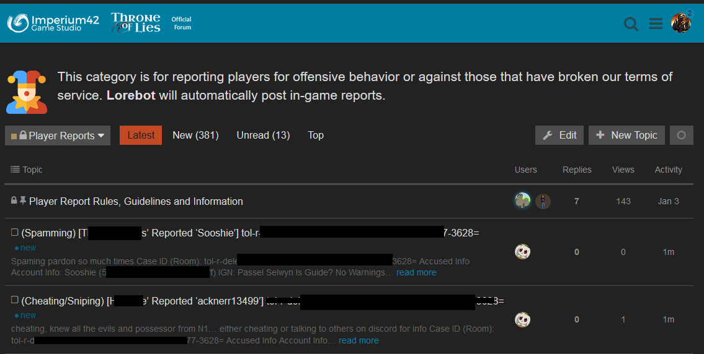
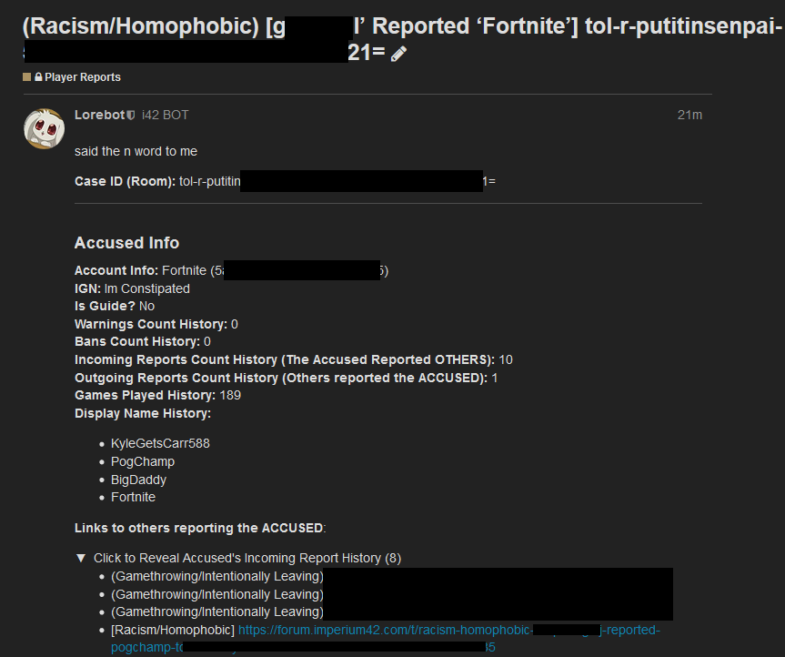
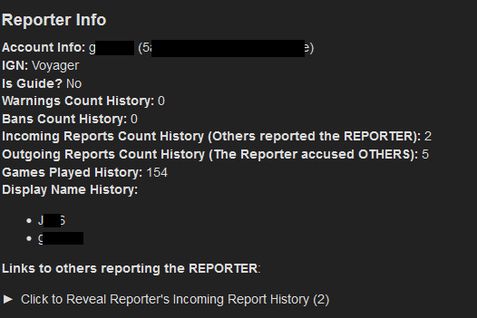
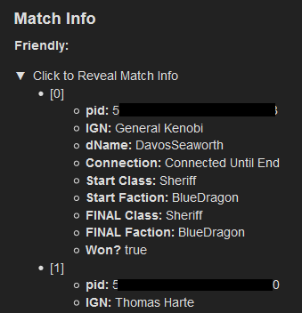
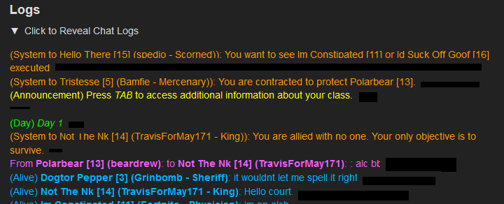
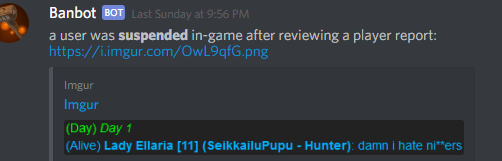

#########################################
**THIS POST IS OLD! See our latest:
#########################################
Introduction
This was similarly posted before a few weeks ago, but just in a random post – I wanted to make it official what it is that we do that separates us from other games in terms of reporting/moderation handling.
We believe that our approach to handling reports is more hands-on/human, more fair/accurate, more transparent, and overall better than any other indie game that we’ve encountered thus far:
You reported someone for toxicity
It goes to the forum posted by @Lorebot and notifies Guides+ in Discord in a secret channel:

Guides/Mods/Devs Review the Report
- We first check the summary and predefined reason from the report
- We then check how many games the player has played to consider if they are new
- We check out their display name history to see if any names ring a bell from past issues
- We consider how many previous reports they have received against them and if they have a history of similar behavior
- We also consider the REPORTER’s info and how new they are – we want to make sure it’s not a salt report. We also check how often the reporter reports others to make sure the reporter doesn’t send out fake reports / overly sensitive reports (expectations of rated “G” behavior instead of “PG-13”). We also ensure they aren’t filing a false report.
- We check out who was in the match to keep in mind if they’re trolling with others/friends. This also makes it easy to find a pattern of cheating (usually it’s done with the same people).



Review the Logs for the Truth
- Some players report someone thinking they’re cheating, but maybe they received information from someone else via a whisper or night chat.
- Sometimes you think a player is being toxic, but it was actually a trollbox from someone else.
- We can see ALL OF THIS STUFF and more: Whispers to/from, original trollbox authors, who left the game and when, and many other things you don’t even see in the game, but we see it all.
- We make sure that the user wasn’t baited. The biggest misconception is when someone gets in trouble, they think the other person won’t get in trouble – both instigators and final toxic guys BOTH get punished, so baiting = bad.

Disciplinary Action
-
After the review, guides/mods will summarize the logs and provide a screenshot for both the suspended user and the Discord #justice channel to see for proof that we manually reviewed the case (sometimes NSFW):
-
If a guide, they’ll pass along to a judge+.
-
If a judge, they can issue a friendly FYI (unlogged), not-so-friendly warning (logged), or a 1-day suspension, Judges can go ahead and lock the case + issue the action. Anything higher is passed to a mod for review.
-
If a mod reviews, they can issue up to a 3d ban. Anything higher is passed to a dev for review.
-
Devs usually review the nastiest cases and ensure they don’t come back. The worst cases will be blacklisted to ensure they don’t return by any means.
After a User is Suspended
Their semi-anonymous case info is then shown in Discord’s #justice channel in realtime (nsfw) for proof of active moderation and a logbook of the type of activity we have stopped:

Although their username and in-game name is revealed in the screenshots, it’s not revealed in text so users can’t CTRL+F in order to witch-hunt or shame. Again, not every case is as it seems – some users showing toxicity may have been trollboxed, actually coming from a different player! Trust us to handle it. You can see how much info we have.
We use the #justice channel not to shame people (that’s why we take away the text), but to prove that your reports DO something and to be transparent in what we do. Any game can say “we’ll handle it”, but we show you we do something and it really is being handled!
FAQ
Q: Why do SJW devs ban everyone for no reason?
Hopefully this post resolves any misconceptions of this – that we go through a rigorous, manually-reviewed process and consider many facts before issuing disciplinary action.
Q: I see tons of negative reviews on Steam saying we’re ban-happy devs and overzealous mods, what’s up?
Of course, people are often not happy when we issue suspensions on accounts. Not every user will face the music, even if we provide proof. If someone “revenge reviews”, we will generally respond in 1-line showing proof of what happened to at least raise awareness to dishonest reviews so that potential players can judge if they’re being honest or not.
Q: Suspending players is THEFT! How can you do this?
Every single online game you’ve ever played has a Terms of Service/EULA – we warn pre-purchase, pre-installation, and pre-logging in that we moderate and can suspend players for bad behavior. Unlike offline games, your actions ripple and affect OTHER player experiences. The game “shell” is $9.99 – the rest is a service that we provide a limited license to you to play as long as you follow the rules~
Q: Ban-happy Devs/mods just like to ban people, don’t they?
It would make it way easier if we enjoyed it  alas, going through thousands of reports of genital-drawn deathnotes, nazi symbols, racism, and toxicity sort of stresses our very souls – it’s extremely demoralizing to see a game we made and cherish like a child has to face people here to ruin others’ time instead of coming here to enjoy a game together as a community.
alas, going through thousands of reports of genital-drawn deathnotes, nazi symbols, racism, and toxicity sort of stresses our very souls – it’s extremely demoralizing to see a game we made and cherish like a child has to face people here to ruin others’ time instead of coming here to enjoy a game together as a community.
The devs spend hundreds, if not thousands of hours simply coding moderation utilities (like Lorebot, in-game reporting, Discord in-game moderation commands) coding these boring systems that we could be using to make the game EVEN COOLER… but a great deal of our resources goes to moderation, because it definitely IS a high priority, as most of the community can probably agree. We still vastly update the game, but we’d love to get to a point where we can move on from moderation features.
We often suffer from revenge reviews mentioned above that kill our ratings for simply banning racists and nasty people. It’s extremely demoralizing and often, even depressing, to moderate at this level.
Then the Guides and Mods are VOLUNTEERS, doing all this for FREE to better help the community. That’s right – these guys are going through all this negativity for hours and hours just so YOU can have a better experience in-game.
What if you make a mistake?
We’re not perfect and neither is our system. However, it’s pretty darn close! When we make a mistake, we will immediately unban, offer an apology, and bribe them with gp for the unfortunate experience! Then hopefully they forgive us 
Conclusion
We don’t enjoy moderating, we don’t enjoy coding moderation features, and we don’t enjoy shooting ourselves in the foot every time we issue a ban in terms of revenge reviews that often sprout from this – however, it is a necessity in order to maintain a healthy community that plays to enjoy the game (and to remove players that get more joy out of ruining the experience for others than the game, itself).
The guides, mods, and devs all work very hard in order to provide such an experience for you. Now that you know how active we are, how many hours we have spent to help you, and what we go through just to hope for a better chance of playing with less-toxic players, we hope that players will understand that reports DO matter. Reports help maintain a healthy community.
Then the next time you see a Guide or Mod, remember what they are doing to help make the community a better place. We are an indie company with only two actual programmers, so know how hard we are working to keep up with moderation features and still balance/add features to the game itself at the same time.
We are ALL here for you.
<3 --Xblade and the Guides, Mods, Judges and Dev team.